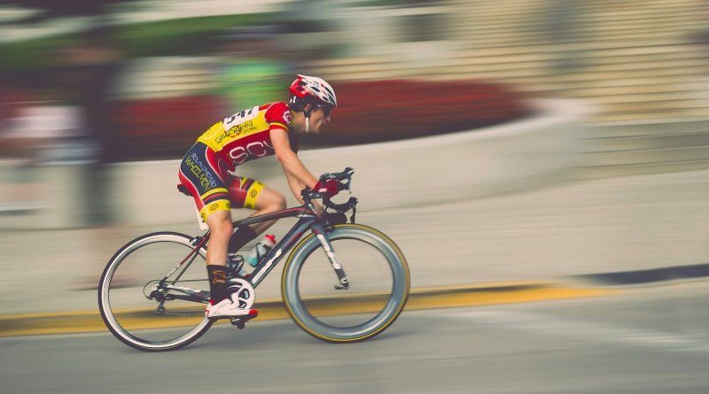

OPINIÓN PERSONAL

- ¿Cuáles son las razones que te hicieron elegir este tema?
Debido a que el ciclismo siempre ha sido un deporte muy interesante que me gustaría que los demás conocieran
- ¿Cuáles son los aportes positivos del tema que elegiste para tu vida?
Permite mantener un buen estado fisico y mental asi como una gran salud